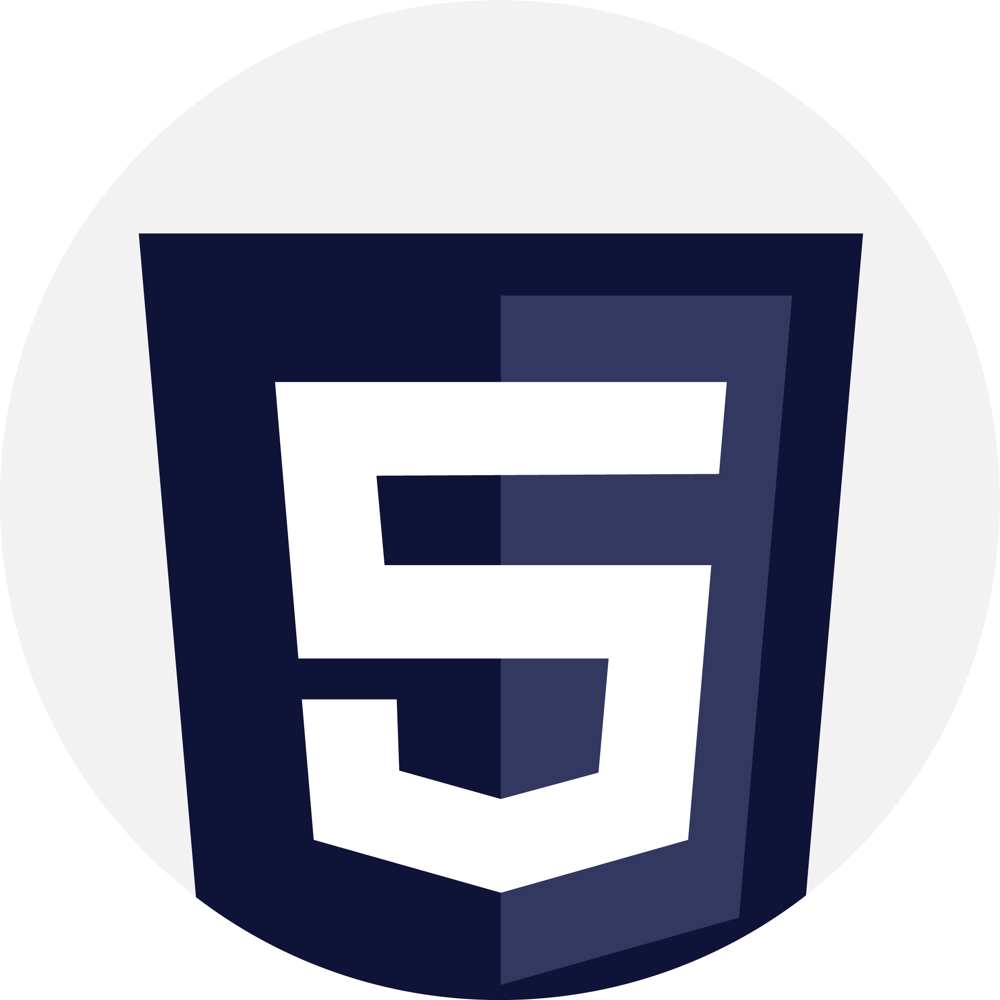
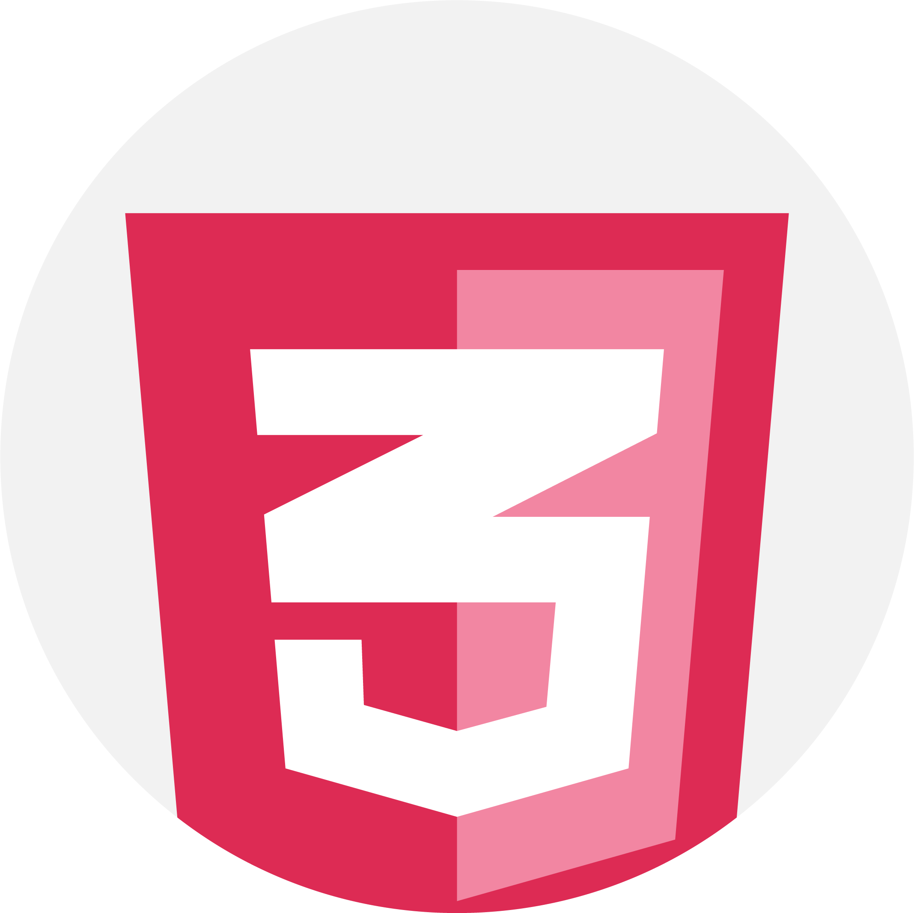
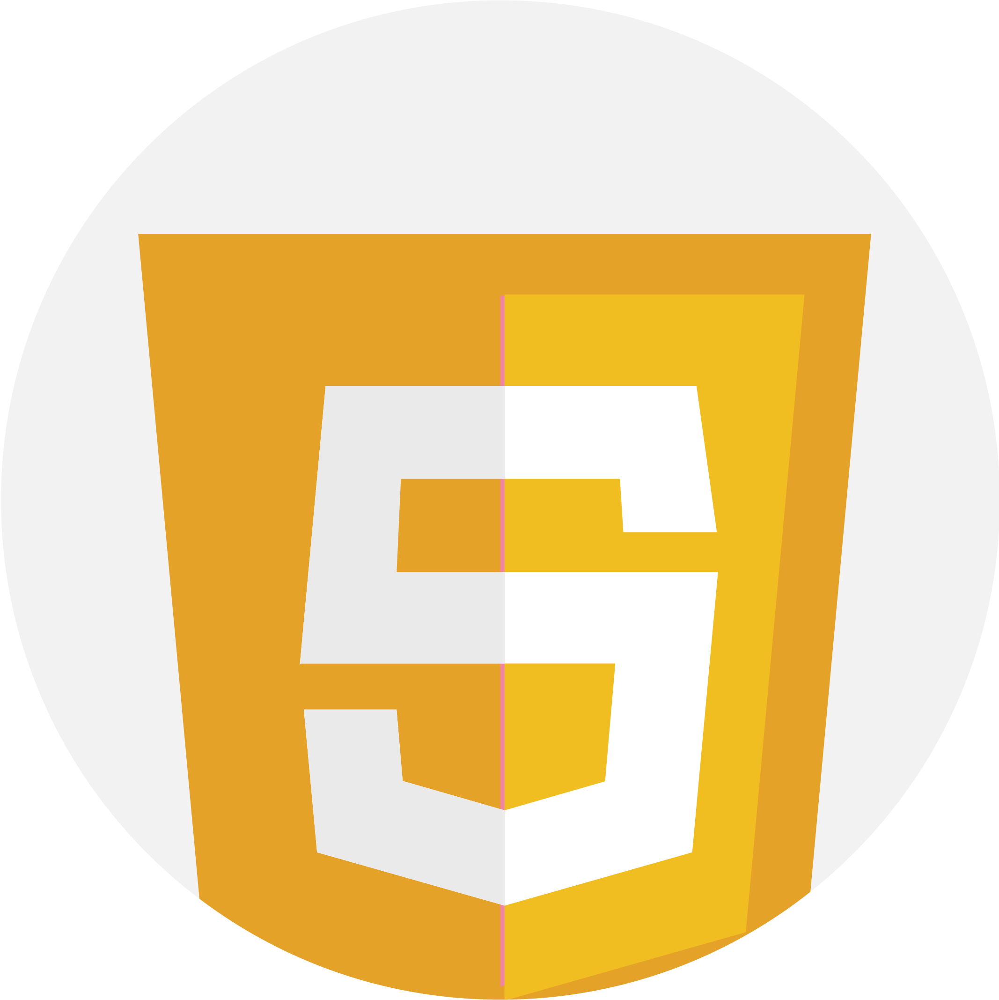
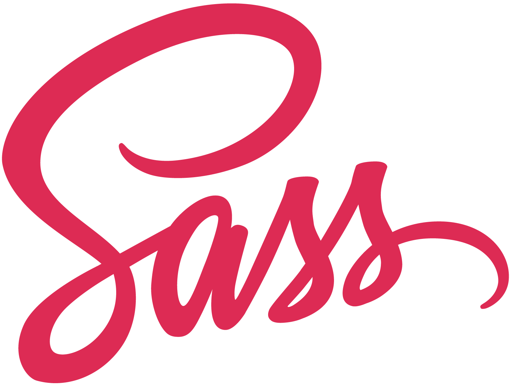
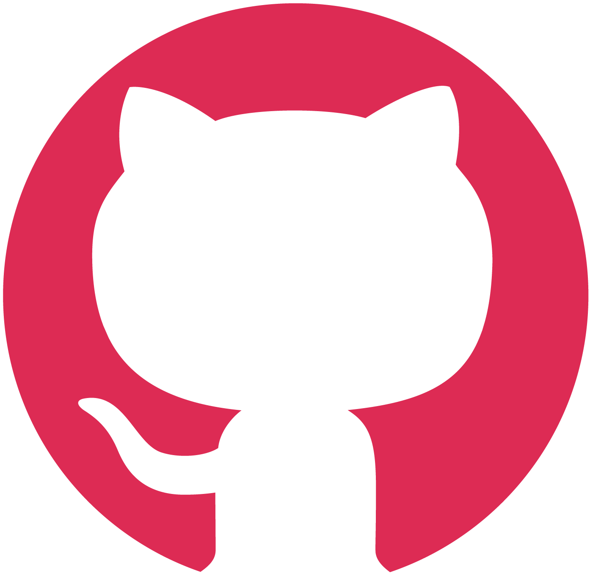
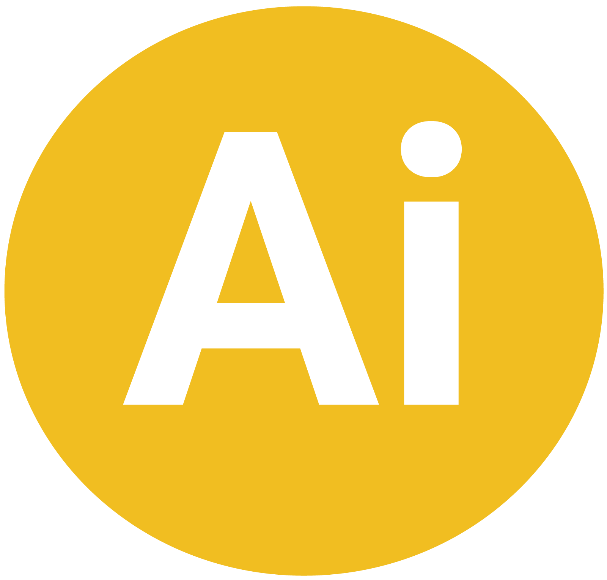
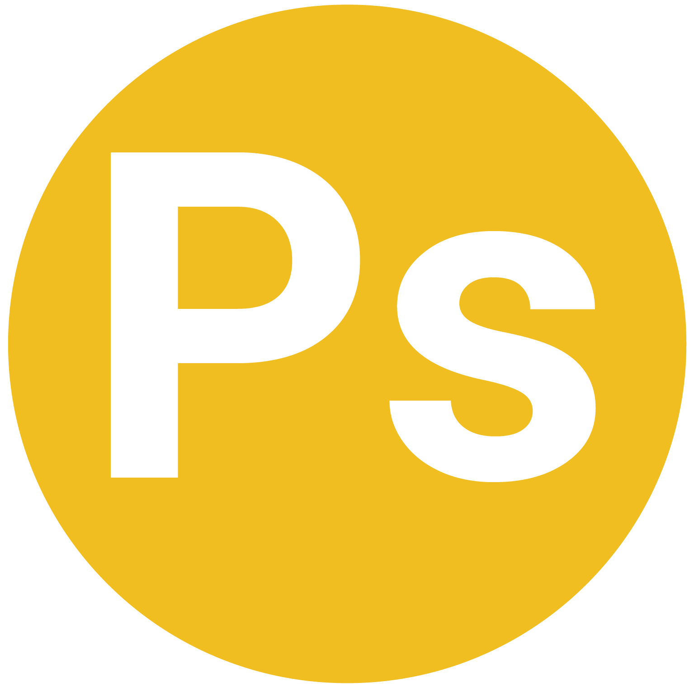
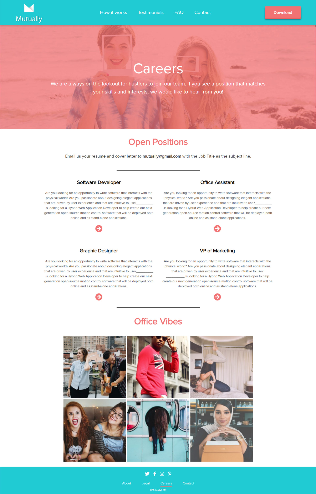

Yadira Stubbs
Mutually
VANCOUVER, BRITISH COLUMBIA. 2018. ROLE: DESIGNER/DEVELOPER.
Mutually is a social, networking, and dating app company based in Vancouver, BC. The app focuses on eliminating the six degrees of separation amongst people and making it easier for individuals and working professionals to meet like-minded people.
TOOLKIT
- 
- 
- 
- 
- 
- 
- ">
- ">
Branding
The Mutually app branding originates from the idea of forming mutual connections and networking with other people. The logos are pre-existing logos that were given to us by the Mutually team. The logo is an M that folds and is a modern twist to the idea of a folded origami logo. The logo comes in two colors, teal and white on solid colored backgrounds.

Color Palette
The color palette we used were bright, vibrant colors that were neutral for the targeted audience and capable of grabbing the attention of users browsing the website. These colors were also the original colors of the logo.
#f27273
#fff
#00cdd2
#afadad
Planning and Development
For planning and development, we had an initial discovery meeting with members of the team to go over some of the requirements of the website, timelines, wireframing ideas, and necessities that were needed for the website. After finalizing these requirements, we produced wireframes and revised according to their feedback. During this phase, we took the opportunity to add a few other design essentials that weren't mentioned in the meeting and based on their feedback for the website wireframe structure.
Upon approval of the wireframes, we produced real mockup designs for the team to get a better idea of what the website would look like when coded and also found a few revisions to be made during this phase based on important elements that needed to be highlighted on the website. During our wireframing sessions and follow-up meetings, we decided to incorporate alot of animation elements to the website to grab the attention of users even more as they hover over different elements and also create a content management system that would make it easy for the Mutually team to manage their own website. Finally, we designed and created, using several different coding languages and development tools, a consistent, modern, dynamic, and simple website that users can relate to when browsing and learning more about the app.


Mockup Design


Wordpress Template Structure
Final Design
Responsive Design